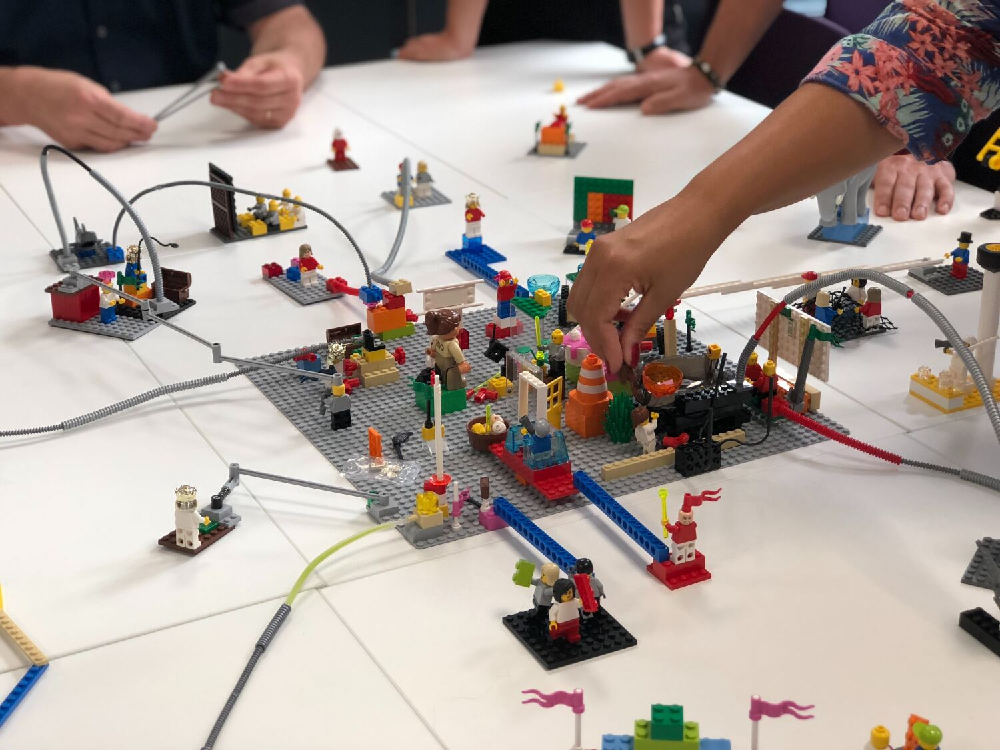

In the fast-paced world of software development, engineering teams can sometimes struggle to keep up with the demands of marketing and business expansion. This can leave little time for planning and implementing large software features or even making small hotfixes that are not necessarily related to a bug.
Hotfixes or patches refer to code changes that are introduced in production to address bugs that were not discovered during testing or were introduced in a previous release. In software development, the pace of requirements can make it challenging to plan and prioritize development work. Unexpected changes in priorities or urgent feature requests may require the implementation of hotfixes or patches. Development teams need to be flexible and responsive to changing requirements, while also managing technical debt.
In response to the pressure to deliver new features and address urgent issues, engineering teams may sometimes come up with quick solutions that are not ideal from a software design perspective. These solutions may involve hardcoding values or adding if conditions to meet specific requirements, while offloading other tasks to an asynchronous task managed by a worker module. While these quick solutions may address immediate needs, they can lead to technical debt and increase the complexity of the codebase over time. As such, it is important for engineering teams to balance the need for speed with a focus on long-term code maintainability and scalability.

As a matter of fact, development teams often face complex and time-sensitive requirements that require quick thinking and fast implementation, all while being expected to deliver in a snap. Some examples of these incidents could include:
- Providing a discount of Rs 200 or 1.5% (whichever is lower) to users who pay more than Rs 5000 for an insurance service before the due date starts.
- Automatically debiting some pre-listed wallets with standing instruction and making payment against a designated service.
- Sending a push notification to a user who tops up their mobile number.
- Sending a coupon to a user who writes specific text in the payment remarks.
- Settling a user's merchant account balance to a particular bank account but in a frequency different from the regular offering.
- Disabling the load from a bank's mobile app right away due to an error. However, there is no real-time credit to Khalti wallet, and the workflow doesn't originate from our app. The only thing we can do is to stop crediting the user's balance to the wallet and inform the bank manually.
And most of these incidents require attention in a maximum span of two to three business days.
The Consequences of Chasing
Being the backbone of support for the business, it's important for the backend team to remain agile, adaptive, and ready to take on any challenge. However, taking shortcuts and accumulating technical debt just to meet tight deadlines is not fun, as it can lead to serious consequences in the future.
Say no to patch, say yes to feature seeding
So, what is feature seeding ?
Feature Seeding is a strategy that introduces a micro-feature into the production environment to fulfill an immediate need, regardless of whether it is a bug or hotfix. The purpose of such codebase is to provide a temporary solution that can be further developed into a complete feature module in the future. This approach allows for quick and agile implementation while still addressing current requirements and minimizing the technical debt or possible catastrophic consequences.

Why feature seeding ?
While such shortcuts may be mandated by higher authorities to keep up with market demands, they can create dependencies on specific individuals and increase technical debt in the long run.
In a more ideal scenario, a rigorous Change Request process and a well-planned Sprint would be followed, but in the fast-paced world of software development, these steps may be skipped in favor of quick implementation. As a result, the SDLC may be altered multiple times to keep up with market demands, leading to potential long-term consequences.
That's when we picked Seed Feature as our strategy.
Pros
- (A little) more time for planning: Since a seeded feature is recognized as a potential feature, it allows for more time to be allocated during the solution planning phase, resulting in a better-designed and documented solution.
- Collaboration opportunity: By taking a feature-like approach, even teams that may not be fully available, such as product and QA, can collaborate and provide their insights.
- Future reusability: The seeded feature can be utilized as a reference for future urgent requirements that may arise, increasing its reusability.
- Improved flexibility: Partial granularity and configurability can be introduced with a seeded feature, allowing the codebase to be extended and reused with more flexibility.
- Feature control: Feature flags can be implemented to control the visibility and functionality of the seeded feature, enabling it to be used as a short-lived solution if needed.
- Reduced maintenance: The seeded codebase doesn't need to be deleted or rewritten, reducing maintenance time and resources.
- Lower technical debt: Since it's more documented and tested by the QA team, a seeded feature can help lower technical debt.
- Simplified complexity: Seeded features are more prominent and visible than hardcoded patches, making the codebase less complex and easier to manage.
Additionally, the delivery cycle can be significantly reduced in the future when similar urgent requirements arise, as the seeded feature serves as a foundation and reference point for developing a complete feature module.
Cons
While there are certainly risks and downsides associated with this approach, it can be a viable option if the potential consequences are fully understood and the decision is made with a clear understanding of the trade-offs involved. Ultimately, it is up to each engineering team to find the balance between delivering features quickly and maintaining a sustainable codebase over the long term.
- Time and Effort - Adds additional time and effort to the development process, potentially delaying other tasks and projects.
- Documentation - Requires extra documentation to ensure the temporary solution is properly understood and can be developed into a complete feature in the future.
- Limited Reusability - There's a risk that the feature seeded may not be needed again in the future, leading to wasted resources.
- Infrastructure and Deployment Costs - The feature may require additional infrastructure or deployment costs that were not planned for.
- Technical Debt - If not done properly, feature seeding can lead to more technical debt in the long run.
- Stakeholder Buy-In - It may be difficult to get stakeholders to buy-in to the idea of feature seeding and to understand the potential impact.
Our own experiences
As the CTO, I have consistently advocated for the value of feature seeding as a solution for urgent business needs aligned with our Go-to-Market strategies. While we have experienced both successes and failures with seeded features, I firmly believe that this approach has the potential to be a game-changer in software engineering and product development. It's essential to remember that feature seeding is not merely a short-term or long-term strategy, but a strategic approach that can lead to significant innovation and growth.
DaamiQR
DaamiQR was born out of a simple yet crucial insight - some of our users were using our app to scan QR codes generated by other wallets, causing them to miss out on the momentum of QR penetration in the industry. We seeded DaamiQR as a solution to quickly inform users that the scanned QR codes were not supported in a fun and engaging way Over time, DaamiQR evolved from a simple scanner feature to a powerful engagement tool for below-the-line activities. We even took it a step further and distributed it to FMCG companies as part of their loyalty programs. DaamiQR became a game-changing approach to QR code scanning, allowing our users to effortlessly engage with brands and unlock rewards, all while enhancing their overall experience with our app. DaamiQR feature proved to be a viable alternative to a non-payment QR feature.
VNL
What began as a simple web wrapper to load webpages for marketing promotions and sharing deep links on social media, has now evolved into a powerful micro-application framework inside the Khalti Wallet.
TaGGR
A simple "if this then that" parser that we initially seeded ended up maturing into a highly granular post-action trigger manager.
InApp Roadblock
A basic API call that was initially used to track application opens quickly evolved into a versatile marketing and communication tool. This feature allowed us to send important notifications to our users and even force updates in case of critical bugs in the application. With its evolution, this API call became an essential component in ensuring our users have a seamless experience with our app, while also providing us with valuable data on user behavior and engagement.
Bazzar
What started as a solution to cater to the needs of merchants selling things online through Facebook has now matured into a robust hyperlocal merchant integration platform. This platform has evolved to a point where it can integrate almost any merchant today, no matter their size or location. It's amazing to see how a simple idea has grown and expanded to serve the needs of merchants across various industries.
Heist
Initially started as a quiz application, the app continued to offer the quiz feature while also expanding to include other features. The app took a different direction as it evolved into a user performance data lake and consolidation platform. This unexpected transformation allowed us to gather valuable insights into user behavior and performance, ultimately leading to improvements in the app's overall functionality and user experience
Jamara
Originally a simple static HTML generator written in Django, the tool has since evolved to serve as a powerful and flexible custom CMS for the Khalti homepage.
To conclude,
At Khalti, we're passionate about creating products that make a difference in people's lives. Our journey began with simple ideas that have grown into powerful tools that are now an integral part of people's lives. Our products may have started out simple, but through innovation and hard work, they've grown into something much more. We believe that technology can be a powerful force for good, and we're committed to using it to create products that make people's lives better.